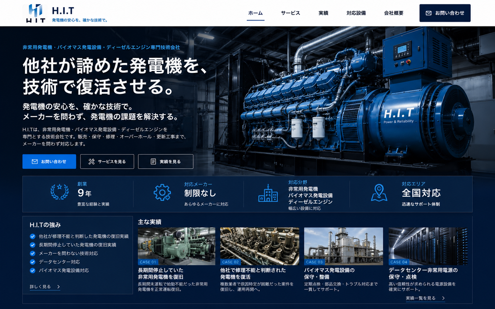

他社が諦めた案件への対応力
修理不能と判断された設備や、長期間停止していた発電機の復旧にも対応します。

非常用発電機・バイオマス発電設備・ディーゼルエンジン専門技術会社
発電機の安心を、確かな技術で。メーカーを問わず、発電機の課題を解決します。
修理不能と判断された設備や、長期間停止していた発電機の復旧にも対応します。
国内外メーカーを問わず、設備の状態を見極めて最適な対応を行います。
ディーゼルエンジンの診断・修理・整備まで踏み込んだ技術対応が可能です。
データセンター、発電所、工場など、止められない設備を支えます。
SERVICE
現場で培った技術力
国内外メーカー対応
非常用・バイオマス・エンジン
工場・発電所・DC等
WORKS
燃料系統・制御系統・エンジン状態を診断し、正常運転まで復旧。
原因特定が困難なトラブルに対し、現場診断と部品確認を行い復旧。
発電設備の安定稼働を目的に、エンジン整備、点検、不具合対応を実施。
重要設備に求められる電源信頼性を支えるため、保守点検と改善提案に対応。